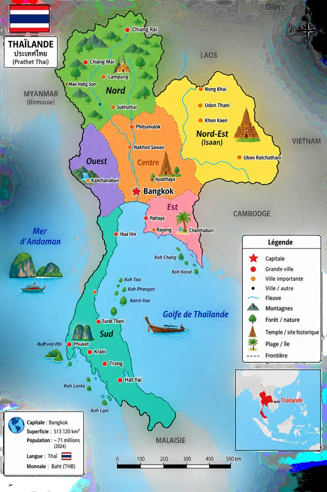

Destinations
Où voulez-vous poser vos valises ?
Cliquez sur une ville pour découvrir son ambiance. Les photos de chaque ville arrivent bientôt.
Nord
Centre
Sud

Bangkok
Capitale électrique
Une mégapole qui ne dort jamais : temples dorés au coin d'un rooftop bar, marchés flottants au petit matin, tuk-tuks qui filent entre les gratte-ciels. Bangkok surprend par ses contrastes — sacré et frénétique, ancien et ultramoderne.
Chiang Mai
Douceur du nord
Nichée dans les montagnes, Chiang Mai respire un rythme plus lent : temples de bois patinés, marchés de nuit animés, cours de cuisine thaïe et treks vers les tribus des collines. L'ambiance est chaleureuse, artisanale, résolument nature.
Ayutthaya
Cité des ruines sacrées
L'ancienne capitale du royaume siamois se visite à vélo, entre stupas effondrés envahis par les racines et bouddhas de pierre silencieux. Une atmosphère méditative, hors du temps, à deux pas de Bangkok.
Krabi
Falaises et mer turquoise
Des falaises calcaires plongeant dans une mer turquoise, des longtail boats colorés, un rythme résolument tourné vers l'eau. Krabi est le point de départ idéal vers les îles, entre grimpe, plage et couchers de soleil.
Koh Lanta
Île paisible, rythme lent
Moins touristique que ses voisines, Koh Lanta cultive une ambiance décontractée : longues plages presque désertes, bungalows en bois, couchers de soleil sans se presser. Idéale pour ralentir en fin de séjour.
Koh Phi Phi
Îles et eaux cristallines
Falaises spectaculaires, lagons turquoise et vie nocturne animée : Koh Phi Phi concentre l'image de carte postale de la Thaïlande. Entre plongée, sorties en bateau et bars de plage, l'ambiance est à la fois festive et grandiose.
Chiang Rai
Temples blancs et Triangle d'or
Moins courue que Chiang Mai, Chiang Rai séduit avec son temple blanc aux mille miroirs, son temple bleu éclatant et la mystérieuse Maison Noire. Aux portes du Triangle d'or, l'ambiance est calme, artistique et empreinte de spiritualité.
Pai
Petite ville, esprit routard
Nichée dans une vallée de montagnes, Pai cultive un esprit routard et décontracté : canyon à explorer, sources chaudes, marché de nuit animé et cafés en bois posés au bord de la rivière. Le rythme y est volontairement lent.
Chiang Khan
Village au bord du Mékong
Face au Laos, ce village aux maisons de bois s'étire le long du Mékong. Ambiance paisible et authentique : promenade au coucher du soleil, marché de nuit local, brume matinale sur le fleuve — loin des foules touristiques.
Udon Thani
Porte du nord-est authentique
Grande ville de l'Isaan, Udon Thani est un point de départ vers le site préhistorique de Ban Chiang et une immersion dans la Thaïlande rurale, loin des circuits touristiques classiques. Marchés locaux, vie de quartier et hospitalité sincère.
Lampang
Calèches et maisons en teck
Ville authentique du nord, Lampang est connue pour ses calèches tirées par des chevaux, ses maisons en bois de teck centenaires et le temple Wat Phra That Lampang Luang, l'un des plus beaux de Thaïlande. Une ambiance paisible, loin des foules.
Kanchanaburi
Rivière Kwaï et cascades
Entre le pont de la rivière Kwaï chargé d'histoire et les cascades en escalier du parc national d'Erawan, Kanchanaburi mêle mémoire et nature. Une ambiance verdoyante, propice aux randonnées et à la baignade en pleine jungle.
Pattaya
Bord de mer animé
Station balnéaire tournée vers le divertissement : plages, sports nautiques, marchés flottants et vie nocturne qui ne s'arrête jamais. Pattaya assume pleinement son ambiance festive et cosmopolite.
Koh Kood
Île préservée, eaux limpides
L'une des îles les plus préservées du golfe de Thaïlande : plages de sable blanc, eaux turquoise peu fréquentées, cascades cachées dans la jungle. L'ambiance est résolument tranquille, loin du tourisme de masse.
Koh Chang
Jungle tropicale et grandes plages
Deuxième plus grande île de Thaïlande, Koh Chang associe plages étendues et jungle dense qui grimpe jusqu'aux collines. Entre randonnée, cascades et farniente, l'ambiance oscille entre aventure et détente.
Hua Hin
Station balnéaire royale
Ancienne retraite royale à deux pas de Bangkok, Hua Hin offre une ambiance balnéaire plus posée : longue plage, marché de nuit réputé, terrains de golf et une pointe d'élégance rétro.
Khao Sok
Jungle primaire et lac spectaculaire
L'une des plus vieilles forêts tropicales du monde : falaises calcaires vertigineuses, lac de Cheow Lan et ses bungalows flottants, faune sauvage au détour des sentiers. Une immersion totale dans la nature, loin de tout.
Koh Samui
Île resort, cocotiers et confort
La grande île du golfe : plages bordées de cocotiers, spas, bons restaurants et une infrastructure touristique bien rodée. Koh Samui séduit ceux qui cherchent confort et détente sans sacrifier le charme tropical.
Koh Tao
Paradis de la plongée
Petite île réputée dans le monde entier pour sa plongée sous-marine accessible et ses récifs colorés. L'ambiance y est jeune et décontractée, entre écoles de plongée, bars de plage et couchers de soleil sur l'eau.
Phuket
Grande île, mille visages
De la vieille ville sino-portugaise colorée aux plages animées de Patong, en passant par les criques tranquilles du sud, Phuket concentre toutes les ambiances de la Thaïlande insulaire en une seule île.
Phang Nga
Baie aux rochers karstiques
La baie de Phang Nga déploie ses pitons rocheux surgissant de la mer émeraude, ses villages de pêcheurs sur pilotis et ses grottes à explorer en kayak. Un décor spectaculaire, presque irréel.
Trang
Portes des îles secrètes du sud
Trang est le point de départ vers des îles encore confidentielles — Koh Mook et sa grotte d'émeraude, Koh Kradan et ses eaux cristallines. Une ambiance authentique, loin des sentiers battus du tourisme de masse.
Koh Lipe
Les Maldives thaïlandaises
Tout au sud, presque à la frontière malaisienne, Koh Lipe cultive des allures de Maldives thaïlandaises : sable blanc immaculé, eaux turquoise translucides et rythme volontairement ralenti, loin de tout.
Une ville vous fait envie ?
Parlons-en pendant l'appel découverte, gratuit et sans engagement.
Réserver mon appel gratuit